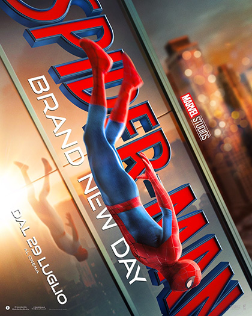
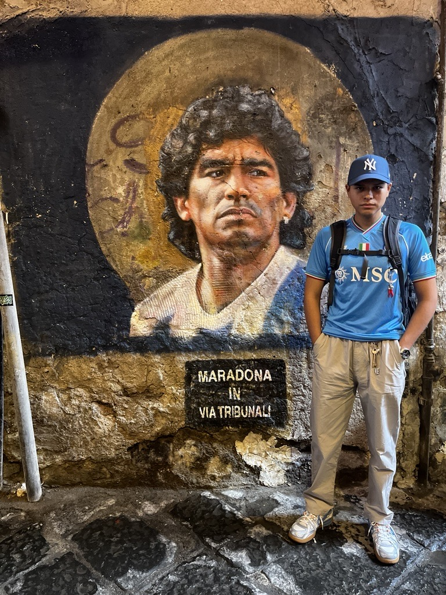
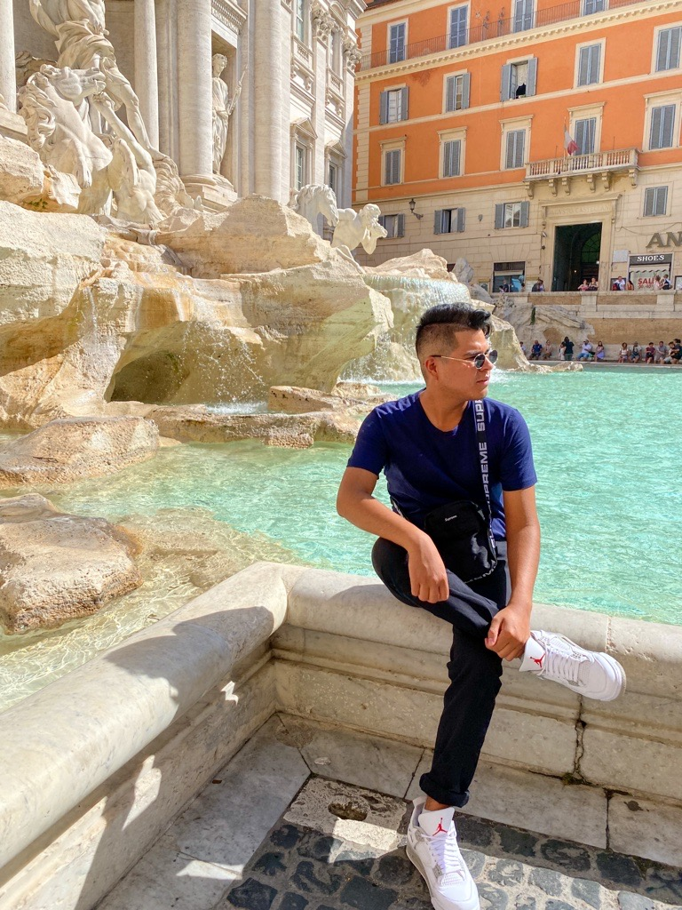
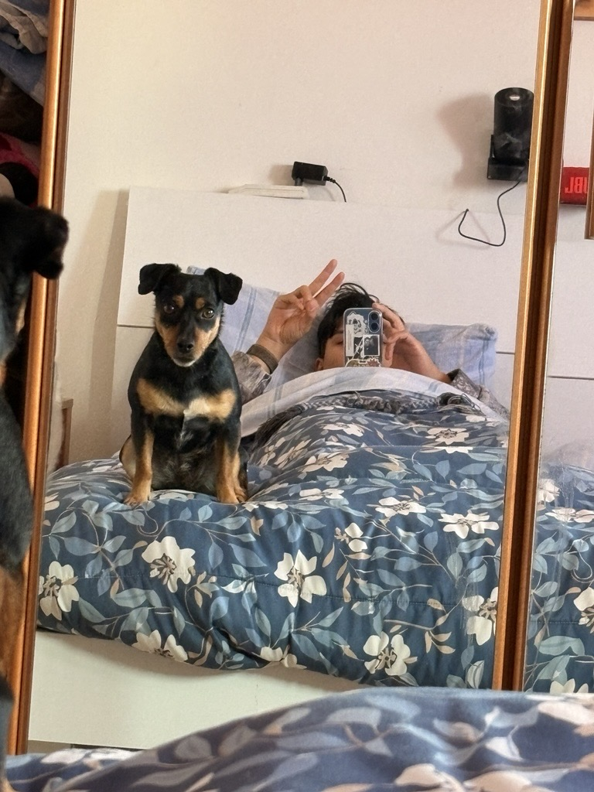
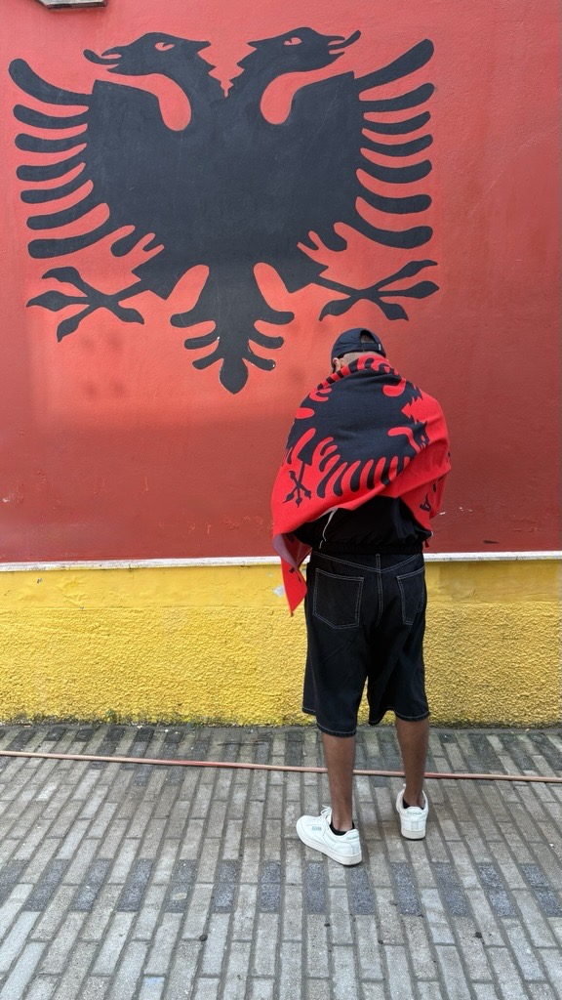
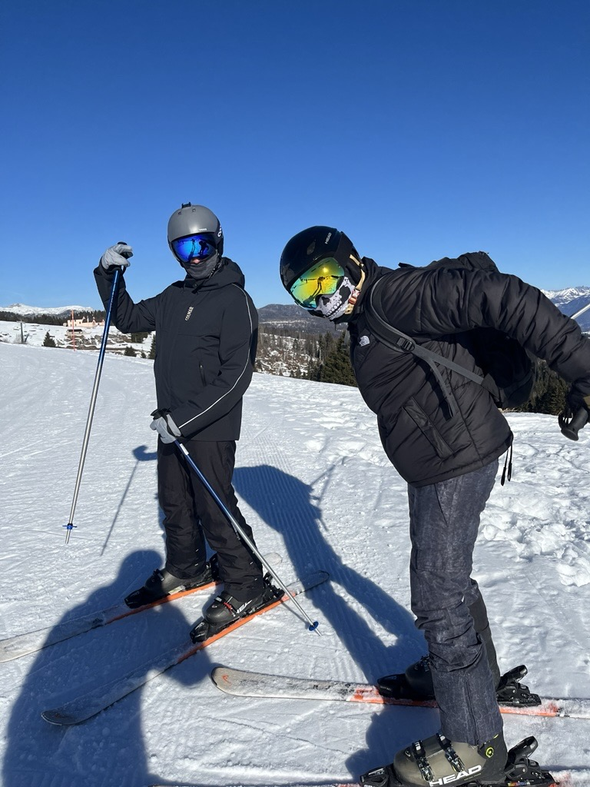

Il mio archivio personale
Uno spazio dove raccolgo foto, video, pensieri e tutto ciò che mi interessa. Nessun tema fisso: solo le cose che valgono la pena di essere conservate e condivise.
Attività recente
LogChi sonoBio

Ciao, racconto chi sono, cosa faccio e cosa mi appassiona.
- Base
- Padova, IT
- Età
- Classe 99
- Interessi
- Foto · Video · Videogiochi · Sport · Scrittura
- Stato
- In costante aggiornamento
Il mio archivio in numeri
📅 2026
📁 Agosto
+ 14 agosto 2026
Mi trovavo da solo a lavoro, e avevo già finito tutti i miei task, quindi ho deciso di creare e mettere online il mio sito personale, visto che alle superiori ho imparato a utilizzare HTML, JAVA e CSS, ho deciso di provaci visto che non ho mai avuto tempo per un progetto personale.
+ 15 agosto 2026
Il giorno di ferragosto visto che non ho organizzato nulla con nessuno, ho deciso di mettere mano al sito, d'altronde sono in vacanza posso fare quello che voglio 😄, Gemini e Laude mi hanno dato una grossa mano, è difficile trovare i bug in quasi 1800 righe di codice, e si che è un sito molto statico, non oso pensare come siano i siti che devono gestire utenti, mail e pagamenti 😱.
+ 16 agosto 2026
Guardando indietro, mi rendo conto di quanta strada ho fatto da quando ho iniziato: sono partito da un sito semplicissimo a schede (Homo, Chi sono, Galleria, Video, Contatti) e piano piano l'ho trasformato in qualcosa di più mio. Ho aggiunto le sezioni YouTube, Film & Serie e Videogiochi, con un modale che si apre cliccando sopra e mostra copertina grande + descrizione. Ho messo un tema chiaro/scuro con un bottoncino sole/luna in alto a destra, che si ricorda la scelta anche se richiudo il sito. Ho ridisegnato bordi e ombre delle card per dare più profondità, e aggiunto piccole animazioni. Alla fine il sito comincia davvero a sembrare qualcosa di curato, e mi sta piacendo tenerlo aggiornato.
+ Dal 17 al 21 agosto 2026
Una settimana ad Alghero che si potrebbe riassumere in: mare cristallino, escursioni in barca, aperitivi al tramonto e un'Odissea finale in aeroporto.
Il viaggio è iniziato sotto i migliori auspici: l'andata in volo è volata via in modo perfetto, liscio e puntualissimo. Una volta atterrati, ci siamo tuffati nei ritmi rilassati della Sardegna. Abbiamo esplorato la costa da un'altra prospettiva grazie a un giro in barca indimenticabile, fermandoci sotto le imponenti scogliere calcaree del promontorio per fare snorkeling in calette trasparenti insieme ai pesci.
Le giornate si sono divise tra avventure in acqua, nuotate in apnea e passeggiate serali per le vie del centro storico di Alghero, fino ad attendere il tramonto dorato sulla spiaggia con la vista del promontorio sullo sfondo.


L'unico vero momento "avventuroso" (e decisamente meno piacevole) è arrivato proprio alla fine: al momento di tornare a casa, il volo di rientro ha deciso di testare la nostra pazienza accumulate ben 12 ore di ritardo. Una maratona in aeroporto che ha messo a dura prova il nostro relax, ma che non è riuscita a scalzare il ricordo dei giorni fantastici passati in barca tra amici.
+ 23 agosto 2026
Ultimo giorno di ferie, riposo e relax sono d'obbligo, lo passero a vivere una vita lenta e goduria come tanto mi piace fare senza lasciare indietro le mie passioni.
+ 24 agosto 2026
Rientro in ufficio, con un risveglio un po' traumatico, si ritorna alla routine, colazione, preparazione della pasta per pranzo, ci si lava e ci si profuma e poi via con la mia Kia special che… Poi sai si prega di non trovare traffico e si arriva nel magico ufficio. La giornata è appena iniziata speriamo finisca nei migliori dei modi, vi terrò aggiornati😉.
+ 25 agosto 2026
Oggi ho fatto varie implementazioni e automatismi, nella comodità di casa sto provando se tutto funziona come dovrebbe, nei prossimi giorni comunque farò altri test. Probabilmente inizierò a pensare anche a qualcosa a livello di UE hai design, ovviamente facendomi aiutare da laude AI, visto che non ho competenze del genere, ma vediamo con calma.
+ 26 agosto 2026
Dopo un estenuante de bug e infiniti minuti di dello, posso ufficialmente dire che la struttura è solida e le implementazioni/automazioni funzionano, il passo successivo sarà quello di UE design, ma non prima di un backup di tutto, d'altronde perdere tutto adesso mi distruggerebbe, vi terrò aggiornati comunque, la cosa più frustrante è quando risolvi una cosa e ne rompi 3.
+ 27 agosto 2026
Oggi ho sistemato delle cose a livello visivo, senza compromettere la struttura del sito, ormai per fortuna ho imparato. Spero di riuscire a mettere anche qualche foto nei pensieri, però magari nei fini settimana, durante la settimana principalmente o è ufficio o è casa 🏠.
+ 28 agosto 2026
Oggi visto il brutto tempo mi è venuta voglia di ascoltare un po' di salsa classica, poi per il resto è un famoso venerdì pigro come tanto mi piace chiamarli 😁, poi per il resto vediamo come andrà questa giornata uggiosa.
+ 29 agosto 2026
Oggi voglio solo rilassarmi e non pensare a niente, la parola d'ordine è relax, anche perché è sabato.
+ 30 agosto 2026
Sono andato al Ohe space con Marta a vedere Spider Man: Brand New Day, sinceramente aspettavo qualcosa di diverso, mi ha leggermente deluso, d'altronde quest'anno sono usciti un sacco di film che hanno soddisfatto completamente le mie aspettative, qualcuno di questi doveva deludermi 😄, peccato perché Spider Man è il mio eroe preferito.

+ 31 agosto 2026
Oggi ho aggiunto delle statistiche con uno script Python, che agisce a livello tessutale, e mi indica l'andamento del mio umore nei vari periodi del mese, poi ho aggiunto una mappa interattiva che mi fa vedere dove sono stato nel mondo, anche perché avvolto mi dimentico anche io dove sono stato 🗺️.
GalleriaFoto







VideoClip & riprese
YouTubeCanali & Contenuti
 18:24
18:24
 03:12
03:12
 03:45
03:45
 03:20
03:20
 02:49
02:49
 04:13
04:13
 04:05
04:05
 03:30
03:30
 05:28
05:28
 05:03
05:03